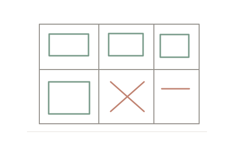
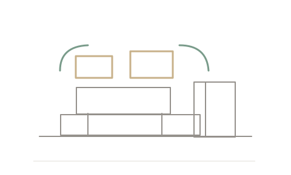
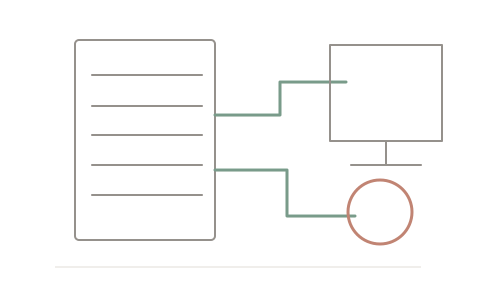
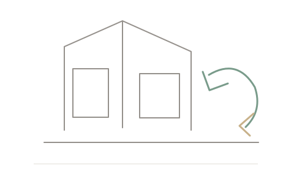

Private offices and desk mix
Test room sizes, circulation and usable capacity against the intended commercial model.


Workspace operators / Considered by design
Match capacity, amenities and services to the operating model. In live centres, plan works around members and everyday operations.
01 / A ROUTE FROM ACQUISITION TO OPENING
Five connected workstreams help reveal the practical and commercial risks before lease terms, fit-out scope or opening dates are fixed.
We can join early meetings with the landlord and agent, clarify the operator’s brief and identify fit-out and approval requirements before a commitment to the building.
Explore desk and office capacity, meeting space and shared amenities. Compare layouts and indicative fit-out costs against the commercial assumptions for the site.
Review available records for mechanical and electrical systems, including age, condition and capacity. Where needed, coordinate a specialist assessment of remaining service life and likely upgrade costs.
Help the operator and its advisers understand how proposed lease obligations, landlord works and the Licence to Alter process could affect scope, capital costs and timing. Refine the proposal as discussions progress.
Develop the agreed scheme through technical design and approvals, then coordinate the fit-out and handover around the operating plan.
We can support early site assessments before an operator commits to a building, as well as the design and delivery of an agreed scheme.
Discuss a potential site Explore feasibilityDesigned for the operating model
Workplace capacity is only one part of a serviced-office assessment. Services, landlord obligations, fit-out costs, procurement and approval lead times can all change the proposition.
Test room sizes, circulation and usable capacity against the intended commercial model.

Consider lounges, meeting rooms, kitchens and arrival areas in relation to member needs and floorplate constraints.

Coordinate cooling, power, data, access and acoustic requirements early with the appropriate specialists.

Consider durable materials, replaceable elements and layouts that can evolve as occupier needs change.
